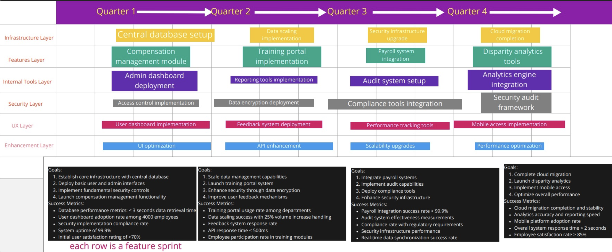

Led a team to develop a Human Resource Information System that integrated 10+ existing systems, identifying and addressing pay disparities. The project emphasized stakeholder collaboration, workflow design, and building a transparent, scalable solution to promote workplace equity.
Our VisionWe believe every team member deserves fair compensation. By centralizing data, we spotlight inequities and empower action.
The wireframe outlines a user interface for managing employee records with the following functionalities:
Solution Wireframe
Overview of the project roadmap, detailing the development and implementation phases.
